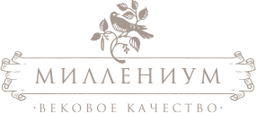

<!doctype html>
        <html lang="ru">
        <!--<![endif]--><head>
	<meta charset="utf-8" />
	<title>Миллениум — Вековое качество продукции из сибирской березы: паркет штучный, декинг, сайдинг </title>
	<meta name="description" content="Миллениум">
	<meta name="author" content="Миллениум">
	<!--[if lt IE 9]>
	<script src="http://html5shim.googlecode.com/svn/trunk/html5.js"></script>
	<![endif]-->
       <link rel="stylesheet" href="css/reset.css">
       <link rel="stylesheet" href="css/typography.css">
       <link rel="stylesheet" href="css/style.css">
       <link rel="stylesheet" href="css/lb.css" media="screen" />
</head>
<body class="second-column services-page grey-title-page">
    
<div id="maincontainer">
    
	<header class="header clearfix">           
            <div class="phone">
                8 903 578-78-41
            </div> 
            
            <a id="logo" href="index.html">
                
	    </a>
            
            <div class="phone p-right">
                8 916 964-24-26
            </div>       
	</header>
    
        <nav id="main-menu" class="r_menu">
            <div class="nav-wrapper">
            <ul class="clearfix">
                <li class="first"><a href="products_upd.html" title="ПРОДУКЦИЯ">ПРОДУКЦИЯ</a></li>
                <li><a href="services.html" title="УСЛУГИ" class="active">УСЛУГИ</a></li>
                <li><a href="about_birtch.html" title="О БЕРЕЗЕ">О БЕРЕЗЕ</a></li>
                <li><a href="manufacture.html" title="ПРОИЗВОДСТВО">ПРОИЗВОДСТВО</a></li>
                <li class="last"><a href="contacts.html" title="КОНТАКТЫ">КОНТАКТЫ</a></li>
            </ul>
            </div>
        </nav>
   
    <div class="main-wrapper">
        <div class="section tops">
            
         <div class="title-wrapper-1"><div class="title-wrapper-2"><div class="title-wrapper-4">
                     
             <h1 class="products-title g-title">Услуги</h1>
             
         </div></div></div>         
            
        <div class="main-wrapper-1">
            <div class="main-wrapper-2"><div class="main-wrapper-3  clearfix">
                <div class="bgcolor-wrapper clearfix"><div class="bgborder-wrapper clearfix">        
                <section id="content">
                        <div class="contentwrapper content-block">
                            
                            <p>
                                Мы предлагаем как сращенный мебельный щит, так и цельноламельный. В зависимости от сортировки исходных заготовок мебельный щит из русской березы представлен четырьмя сортами А/В, А/С, В/С и С/С. Первая буква - обозначение сорта лицевой поверхности, вторая буква - обозначение качества поверхности обратной стороны.Березовый мебельный щит используется для оформления стеновых панелей, кабинетов и кухонь, обшивки потолков и стен, изготовления подоконников, ступеней лестниц.
Широкое применение щит нашел в мебельной промышленности (фасады, двери, филенки, столешницы, столы, стеллажи и др.)</p><p> Все изделия изготовлены из натурального массива русской березы, а использование экологически чистого клея делает нашу продукцию абсолютно безопасной для здоровья.Высокие требования к качеству мебельного щита гарантируют долгий срок службы, долговечность и надежность.
                            </p>
                            
                            <h2>Дополнительные услуги</h2>
                            
                                <div class="bottom-text products">
                                    <p>Элегантность – это отличительная черта интерьера, в создании которого использован паркет из березы. Он соединяет в себе высокую эстетику, идеальное качество и экологическую чистоту натуральной древесины. Толщина рабочего слоя паркета из березы позволяет циклевать его несколько раз, чего лишена паркетная доска. По своей плотности русская береза сопоставима с плотностью дуба и зачастую превосходит бук. Благодаря текстуре древесины и природной белизне паркет из березы легко тонируется, позволяя имитировать любые ценные породы.Традиционно считается, что штучный паркет – это признак достатка в доме. Массив дерева ценился во все времена в любом исполнении, будь то мебель или напольное покрытие. Паркет в доме – признак высокого статуса его владельца
                                   </p><p>
                                    
                                       Наш паркет в<a href="">своем роде уникален</a> своем роде уникален, благодаря молочно-белому цвету с розоватым оттенком он превосходит канадскую желтую березу, американский тополь, канадский клен и сопоставим с «бумажной березой», в небольших объемах произрастающей в Канаде.
                               </p></div>
                            
                            
                        </div>

 

                </section><!-- /.content -->
                
                 <aside id="rightcolumn">
                     <div class="section">
                         
                     <div class="r-block">
                         <h3>Лицензии</h3>
                         <div class="r-content useful">
                            <a href="#">Памятка по условиям хранения</a>
                            <a href="#">Описание качества паркета “МиксЛайт”</a>
                            <a href="#">Паркет сорта “Спорт”</a>
                         </div>
                     </div>
                     
                     </div><!-- /.section -->
                 </aside>  
                
            </div></div></div></div>       
        </div> <!-- /.main-wrapper-1 -->
        </div>
</div> <!-- /.main-wrapper -->
    
	<footer class="footer clearfix">
            
		<div class="copyright">
                    &#169; 2012 <span>МИЛЛЕНИУМ</span> <br />
                    <a href="http://www.spacebox.ru" title="САЙТ РАЗРАБОТАН В SPACEBOX">САЙТ РАЗРАБОТАН В SPACEBOX</a>
                </div>	
                
                <div class="footer-menu-container clearfix">                   
                   <nav id="footer-menu" class="r_menu">
                        <div class="nav-wrapper">
                        <ul class="clearfix">
                            <li><a href="#" title="twitter"> &nbsp;</a></li>
                            <li class="fb"><a href="#" title="facebook"> &nbsp;</a></li>
                            <li class="vk" title="vkontakte"><a href="#"> &nbsp;</a></li>
                        </ul>
                        </div>                   
                  </nav>
                    
                  <div class="wellcome">
                        CЛЕДИТЕ ЗА НАМИ НА
                  </div>                   
               </div>
            
	</footer>
</div>
    
<script src="js/jquery-1.8.1.min.js"></script>
<script src="js/jquery.lightbox-0.5.pack.js"></script>
<script type="text/javascript">
    $(function() {
        $('.gallery-conteiner a').lightBox({
	txtImage: 'Изображение',
	txtOf: 'из'
   });
    });
</script>
<script src="js/height_content.js"></script>

</body></html>